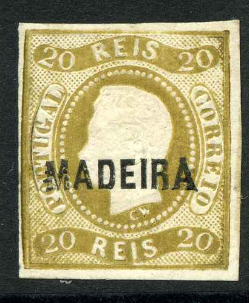
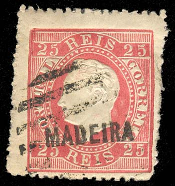

Up to 1869 Madeira used the numeral cancel "51" in a circular pattern of parallel lines.
Madère
Return To Catalogue - Portugal
Note: on my website many of the
pictures can not be seen! They are of course present in the
catalogue;
contact me if you want to purchase the catalogue.
Imperforate

Up to 1869 Madeira used the numeral cancel "51" in a
circular pattern of parallel lines.
20 r brown 50 r green 80 r orange 100 r lilac
Value of the stamps |
|||
vc = very common c = common * = not so common ** = uncommon |
*** = very uncommon R = rare RR = very rare RRR = extremely rare |
||
| Value | Unused | Used | Remarks |
| 20 r | RR | RR | |
| 50 r | RR | RR | |
| 80 r | RR | RR | |
| 100 r | RR | RR | |
Perforated (1868)


5 r black (overprinted in red) 10 r yellow 20 r brown 25 r red 50 r green 80 r orange 100 r lilac 120 r blue 240 r lilac
Value of the stamps |
|||
vc = very common c = common * = not so common ** = uncommon |
*** = very uncommon R = rare RR = very rare RRR = extremely rare |
||
| Value | Unused | Used | Remarks |
| 5 r | R | R | |
| 10 r | RR | RR | |
| 20 r | RR | RR | |
| 25 r | RR | R | |
| 50 r | RRR | RRR | |
| 80 r | RRR | RRR | |
| 100 r | RRR | RR | |
| 120 r | RR | RR | |
| 240 r | RRR | RRR | |
I have seen a reprint of the 5 r black with a black 'MADEIRA' overprint (it should be a red overprint and the stamp should have been perforated!).

Imperforate reprints of the 5 r and 10 r with a horizontal bar on
the top value.

Total forgeries, the stamp, overprint and cancel (bars with
"1" in the center) are forged. Most likely Oneglia
forgeries.
Forged overprints: I have seen many stamps of Portugal with a forged 'MADEIRA' overprint.
Commemorative 'reprint' of 1980:
5 r black (overprinted in red) 10 r yellow 10 r green 15 r brown 20 r brown 25 r red 50 r green 50 r blue 80 r orange 100 r lilac 120 r blue 150 r bleu 150 r yellow 240 r violet 300 r violet

Typical cancellation "45" in an elliptic pattern of
lines (with two interrupted lines) of Madeira. Before 1869
Madeira used a "51" in a circular pattern of bars
numeral cancel.
'Imperforate' stamps with value 25 r blue and 50 r red are cuts from envelopes (issued 1879). Postcards in the same design also exist: 10 r brown, 15 r brown, 20 r blue, 25 r red and 30 r green (all issued from 1878 to 1880).
Value of the stamps |
|||
vc = very common c = common * = not so common ** = uncommon |
*** = very uncommon R = rare RR = very rare RRR = extremely rare |
||
| Value | Unused | Used | Remarks |
| 5 r | *** | *** | |
| 10 r yellow | R | R | |
| 10 r green | RR | RR | |
| 15 r | *** | *** | |
| 20 r | R | R | |
| 25 r | *** | *** | |
| 50 r green | R | R | |
| 50 r blue | RR | R | |
| 80 r | RR | RR | |
| 100 r | RR | RR | |
| 120 r | RR | RR | |
| 150 r blue | RR | RR | |
| 150 r yellow | RRR | RRR | |
| 240 r | RRR | RRR | |
| 300 r | RR | RR | |
Reprints exist.


Imperforate reprints in non-issued colors.
Forgeries:

Forged "MADEIRA" overprints on a genuine 25 r stamp of
Portugal.

2 1/2 r olive
Value of the stamps |
|||
vc = very common c = common * = not so common ** = uncommon |
*** = very uncommon R = rare RR = very rare RRR = extremely rare |
||
| Value | Unused | Used | Remarks |
| 2 1/2 r | *** | *** | |

5 r black (overprint in red) 25 r grey 25 r blue
Value of the stamps |
|||
vc = very common c = common * = not so common ** = uncommon |
*** = very uncommon R = rare RR = very rare RRR = extremely rare |
||
| Value | Unused | Used | Remarks |
| 5 r | R | R | |
| 25 r grey | *** | *** | |
| 25 r blue | R | *** | |
2 1/2 r green 5 r red 10 r lilac 25 r green 50 r blue 75 r lilac 100 r brown 150 r brown
These stamps have perforation 14.
Value of the stamps |
|||
vc = very common c = common * = not so common ** = uncommon |
*** = very uncommon R = rare RR = very rare RRR = extremely rare |
||
| Value | Unused | Used | Remarks |
| 2 1/2 r | * | * | |
| 5 r | * | * | |
| 10 r | * | * | |
| 25 r | ** | ** | |
| 50 r | ** | ** | |
| 75 r | ** | ** | |
| 100 r | *** | *** | |
| 150 r | *** | *** | |
Overprinted 'REPUBLICA' (1911) 2 1/2 r green 'REIS 15 REIS' on 5 r red 25 r green 50 r blue 75 r brown 80 on 150 r yellow 100 r brown '1$1000' on 10 r lilac
These overprinted stamps were actually used in Portugal.
Value of the stamps |
|||
vc = very common c = common * = not so common ** = uncommon |
*** = very uncommon R = rare RR = very rare RRR = extremely rare |
||
| Value | Unused | Used | Remarks |
| 2 1/2 r | * | * | |
| 15 r on 5 r | * | * | |
| 25 r | * | * | |
| 50 r | ** | ** | |
| 75 r | * | * | |
| 80 on 150 r | * | * | |
| 100 r | * | * | |
| 1$1000 on 10 r | ** | ** | |
Overprinted 'VASCO DA GAMA 1924 1925 2$00' (1926) '2$00' on 10 r lilac
Value of the stamps |
|||
vc = very common c = common * = not so common ** = uncommon |
*** = very uncommon R = rare RR = very rare RRR = extremely rare |
||
| Value | Unused | Used | Remarks |
| '2$00' on 10 r | ** | ** | |
3 c violet 4 c yellow 5 c blue 6 c brown 10 c orange 15 c green 16 c brown 25 c red 32 c green 40 c brown 64 c blue 80 c brown 96 c red 1$00 black 1$20 red 1$60 blue 2$40 yellow 3$36 green 4$50 red 7$00 blue
15 c grey (portrait of Pombal) 15 c grey (Pombal shows rebuilding plan) 15 c grey (statue) With additional inscription 'MULTA' (postage due) 30 c grey (portrait of Pombal) 30 c grey (Pombal shows rebuilding plan) 30 c grey (statue)
Many Portuguese colonies also issued similar stamps (in other colours). Click here for more information. Examples:


{kind=link}
{kind=link}
{kind=link}
{kind=link}